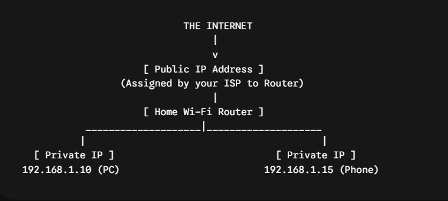
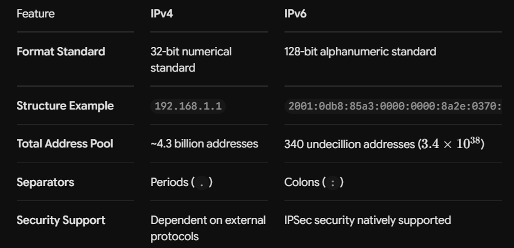

Digital Mailboxes of the Web: Everything You Need to Know About IP Addresses
Imagine trying to mail a physical letter without putting a street address or zip code on the envelope. The postal service would have no idea where to route it or where to deliver the reply.
In the digital world, IP addresses (Internet Protocol addresses) serve that exact purpose. Every smartphone, laptop, smart TV, router, and website server relies on an IP address to send, receive, and route data across global networks.
Here is a practical breakdown of how IP addresses work, their core types, why they matter for your digital security, and actionable steps to safeguard your home network.
What is an IP Address & How Does It Work?
An Internet Protocol address is a unique numerical or alphanumeric string assigned to any device connected to a network.
When you open a Web browser and search for a site, your device breaks that request into tiny data units called packets. Each packet includes:
- The Sender IP Address: Where the data came from (your device).
- The Destination IP Address: Where the data needs to go (e.g., the server hosting google.com).
Network routers examine these destination labels to deliver data packets across the internet and return information directly to your screen.
[ Your Device ] ---- (Data Packet with IP) ----> [ Internet Router ] ----> [ Website Server ] (Sender IP) (Destination IP)
The Core Types of IP Addresses
IP addresses are categorized across two distinct layers: Network Scope and Address Structure.
1. Public vs. Private IP Addresses

- Public IP Address: The address visible to the outside world. Assigned to your router by your Internet Service Provider (ISP), it acts as your household’s single front door on the internet.
- Private IP Address: Internal numbers assigned by your home router to devices inside your local Wi-Fi network (commonly starting with 192.168.x.x or 10.x.x.x). External websites cannot see your private IP.
2. Static vs. Dynamic IP Addresses
- Dynamic IP Addresses: Assigned automatically and changed periodically by your ISP. Most home internet connections use dynamic IPs because they are cost-effective and easy to manage.
- Static IP Addresses: Fixed, permanent numbers that never change. Primarily used by businesses, web servers, and smart home enthusiasts running remote-access security cameras or local servers.
3. IPv4 vs. IPv6 Architecture
As billions of devices connected to the internet, the original address format ran out of available numbers. This led to an upgraded standard:

Why Is Your IP Address Important?
Your public IP address reveals crucial metadata about your digital connection:
- Approximate Location Tracking: Websites and ad networks use your IP to approximate your geographic location (city, region, and postal code area).
- Content Restrictions: Streaming providers use IP geolocation to enforce regional media licensing.
- Targeted Scanning & Exploitation: Open public IP addresses can be scanned by malicious bots looking for unpatched router vulnerabilities or unsecured open ports.
Practical Rules for Securing Your Home IP Address
Protecting your home IP address prevents direct targeting and blocks tracking attempts. Here are four actionable practices to secure your connection:
1. Use a Virtual Private Network (VPN)
A reputable VPN encrypts your web traffic and routes it through a remote server. This masks your real public IP address and replaces it with the VPN server’s IP, shielding your approximate location from websites and trackers.
2. Disable Universal Plug and Play (UPnP) on Your Router
UPnP allows smart gadgets to automatically open router ports to communicate externally. However, misconfigured UPnP exposes internal network devices directly to the internet.
Action: Log into your router admin panel (usually 192.168.1.1 or 192.168.0.1 in your browser) and turn UPnP Off.
3. Change Default Router Admin Passwords
Attackers frequently run automated scans across public IP ranges looking for routers using factory default admin credentials (like admin / password).
Action: Update your router’s administration account password to a strong, unique 16+ character passphrase.
4. Regularly Update Router Firmware
Outdated router software leaves open security holes that permit remote access directly via your public IP address.
Action: Enable automatic firmware updates inside your router settings or check the manufacturer’s website quarterly for official security updates.